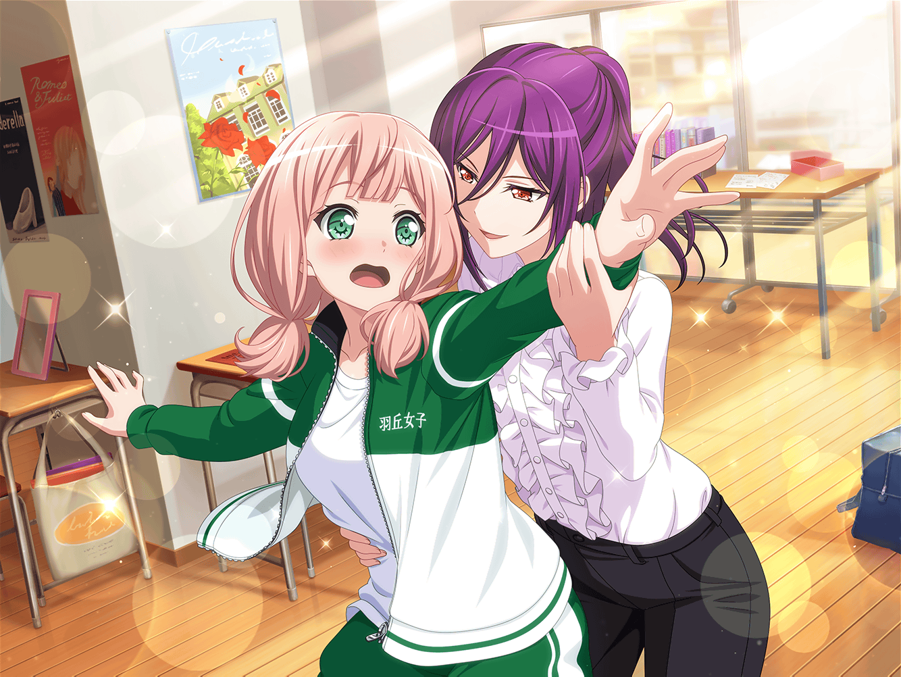

羽丘女子学園
ひまり
ふんふふ～ん♪
巴
あはは、楽しそうだな、ひまり。
そのステップ、この前の瀬田先輩のミュージカルのやつか？
ひまり
そうだよ～！
ふふ～ん♪ 左、右、左、右～♪
巴
おいおい、踊りながら歩くと危ないぞ？
ひまり
大丈夫だって～！
右、左、くるっとターン♪
……あわわっ！？
巴
おいひまりっ！
大丈夫か！？
ひまり
いたた……
うぅ、バランス崩して転んじゃった〜……
巴
まったく、だから言っただろ。
ほら、手
ひまり
え、えへへ……ありがと、巴！
巴
……けど、何度思い返しても、
楽しいミュージカルだったよな
ひまり
うんっ！ 歌って、踊って、お芝居もして！
お客さんから、たくさん拍手もらっちゃったりして！
ひまり
薫先輩と同じステージで、お芝居も出来ちゃって……
もう、一生の思い出だよ～！
巴
ホントに盛り上がってたよな。
アタシ達のダンスとか演技にも、
お客さんが声援くれたしさ
ひまり
そうなの！ なんか、スターになったみたいで
嬉しかった～！ えへへ♪
ひまり
将来、女優さんもいいかもしれないな～、なーんて！
巴
あはは……そう簡単になれるもんじゃないだろ？
ひまり
そうかな～？
意外と上手くいく気がするんだよね！
巴
あははっ、自信満々だな
ひまり
まあね～。
だって、最初はお芝居も下手で、
みんなに迷惑かけてたけど……
ひまり
本番では、結構さまになってた気がするもん！
ひまり
薫先輩のミュージカルに出たことで、
私にもファンが、できちゃったりして～！ えっへへ～♪
女子生徒
あ、あのっ！
そこの方……薫様のミュージカルに出てた方ですよね！
ひまり
えっ、はい！ そうですっ！
ひまり
（……ほ、本当にファンが！？
どうしよう～！ まだ心の準備が……！）
女子生徒
……宇田川巴さん！
あの、本当にかっこよかったです！
薫様と並んだ姿なんて……！
巴
えっ！？ あ、アタシ！？
……えっと……その、ど、どうも……
楽しんでもらえたなら、アタシも嬉しいです
女子生徒
次はぜひ、巴さんのライブを
見に行かせていただきますね！
では、また……
巴
あ、ありがとうございます……
は、はは……まいったな……かっこよかった、かあ……
ひまり
……とーもーえ～
巴
お、おい……そんな睨むことないだろ〜！？
ひまり
だって～！
私にも本当にファンができたのかもって、
ドキドキしたのに～！
ひまり
まあ、巴が女の子に人気があるのはいつものことだけどー
ひまり
はあ……私にもそういうファンの子、いないかなー
女子生徒
あの、すみません。
薫様のミュージカルに出ていたお二人ですよね？
ひまり
はいは～いっ！ そうです！
上原ひまりと、宇田川巴です！
女子生徒
お会いできてよかった！
おふたりとも、とてもステキでしたよ！
ひまり
えへへ～！ ありがとうございます！
女子生徒
特に……巴さん！
ひまり
えーっ！？
女子生徒
ドラムを演奏する姿も、
ダンスもとてもかっこよくて……！
思わずファンになってしまいました！
巴
あ、ああ……ありがとうございます。
よかったら、今度はAfterglowのライブにも
来てください
女子生徒
はい、ぜひ！
巴
……なんか、嬉しいな。
あのミュージカルで、アタシ達の音を
聴きに来てくれる人も増えそうだ
巴
次のライブも、楽しみになってきたな、ひまり！
ひまり
やっぱり巴ばっかりずるいよ〜！
私だってキャーキャー言われてみたいのに〜！
巴
アタシにそんなこと言われてもなぁ……
あはは……